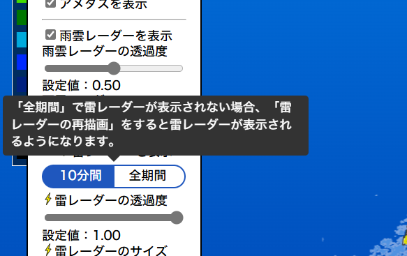

バグ修正・各種改善のお知らせ
バグ修正・各種改善のお知らせyuminさんから、これらのバグや機能追加の情報提供をしていただきました！ ありがとうございました！
アップデートの詳細は以下のとおりです。
-
バグ修正
- 雨雲レーダーの描画ができていなかったバグを修正しました。
- ズームレベルを上げていくと、雨雲レーダーが消えてしまうバグを修正しました。
-
新機能
-
雷レーダーが「全期間」モードの際、雷データの読み込みが描画に間に合わず画面に表示されないことがありました。
これについては、読み込みが終わるまで描画を待たせるという解決策はありますが、毎回待たせていると表示完了まで時間がかかりすぎますので、解決策は適用しないこととしました。
そこで、雷レーダー設定の「期間選択」と「雷レーダーの再描画」の上にマウスをホバーした際に、「雷レーダーが表示されない場合は再描画をしてください」というツールチップを設置することで一旦の解決策としました。
さらなる解決策がありましたら、また更新いたします。 
-
自動更新の設定が画面上のボタンからできるようになりました。
従来のURLパラメータによる設定も引き続き可能としています。
-
雷レーダーが「全期間」モードの際、雷データの読み込みが描画に間に合わず画面に表示されないことがありました。